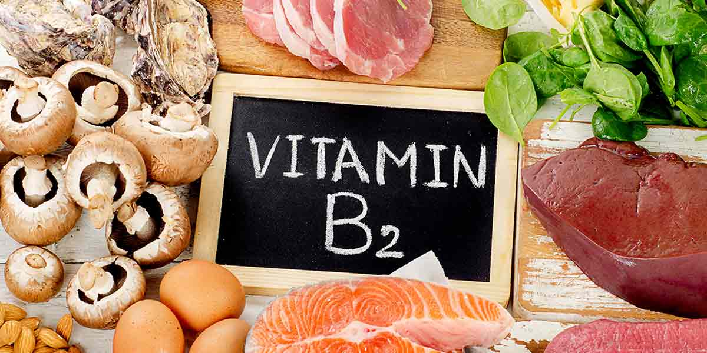
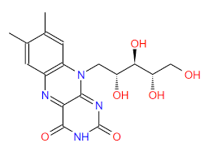

វីតាមីនបេ ២ គឺជាប្រភេទវីតាមីនដែលរលាយក្នុងទឹក ដែលជំនួយដល់ការលូតលាស់ដល់រាង្គកាយ និងការផលិតគ្រាប់ឈាមក្រហម និងជួយបង្កើតជាថាមពលពីសារធាតុការបូអ៊ីដ្រាត។
វីតាមីនបេ ២ មិនមាននៅក្នុងខ្លួនមនុស្សទេ គឺមាននៅក្នុងចំណីអាហារ។ វីតាមីននេះមិនត្រូវការពន្លឺទេ ព្រោះថាកាលណាចំណីអាហារ ដែលផ្ទុកវីតាមីនបេ ២ ប៉ះពន្លឺ នោះវានឹងធ្វើឱ្យបាត់បង់ជាតិវីតាមីនបេ ២ ពីក្នុងចំណីអាហារ។
កង្វះវីតាមីនបេ ២ បណ្ដាលឱ្យមានជំងឺ ស្លេកស្លាំង ឈឺមាត់ ឬបបេមាត់ ជំងឺស្បែក និងឈឺបំពង់ក។
បរិមាណក្នុងការទទួលទានវីតាមីនបេ ២ គឺទទួលទានតាមភាពជាក់ស្ដែងដូចខាងក្រោម។
-ទារក ត្រូវការទទួលទានវីតាមីនបេ ២ ០,៣ មីលីក្រាមក្នុងមួយថ្ងៃ សម្រាប់ក្មេងមានអាយុចន្លោះពី ១ ថ្ងៃទៅ ៦ ខែ និង ០,៤ មីលីក្រាមក្នុងមួយថ្ងៃ សម្រាប់ក្មេងដែលមានអាយុចន្លោះពី ៧ ទៅ ១២ ខែ។
-កូនក្មេង ត្រូវការទទួលទានវីតាមីនបេ ២ ០,៥ មីលីក្រាមក្នុងមួយថ្ងៃ សម្រាប់ក្មេងមានអាយុចាប់ពី១ឆ្នាំទៅ៣ឆ្នាំ, ០,៦ មីលីក្រាមក្នុងមួយថ្ងៃ សម្រាប់ក្មេងមានអាយុចាប់ពី ៤-៨ ឆ្នាំ, ០,៩ មីលីក្រាមក្នុងមួយថ្ងៃ សម្រាប់ក្មេងមានអាយុ៩-១៣ឆ្នាំ។
-មនុស្សវ័យជំទង់ ត្រូវការទទួលទានវីតាមីនបេ ២ ១,៣ មីលីក្រាមក្នុងមួយថ្ងៃ សម្រាប់បុរសអាយុចាប់ពី ១៤ ឆ្នាំឡើងទៅ, ១,០ មីលីក្រាមក្នុងមួយថ្ងៃ សម្រាប់ស្រ្តីអាយុពី ១៤ ដល់ ១៨ឆ្នាំ និង ១,១ មីលីក្រាមក្នុងមួយថ្ងៃ សម្រាប់ស្រ្តីអាយុចាប់ពី ១៩ ឆ្នាំឡើងទៅដល់ចាស់ជរា៕

វីតាមីន B2 : ងាយបាត់បង់នៅក្នុងទឹក ដូចនេះគួរបរិភោគទឹកស្ងោរអាហារឬបន្លែទាំងនោះផង។ ពន្លឺ ក៏អាចបំផ្លាញវីតាមីននេះដែរ គួររក្សាទុកនៅកន្លែងងងឹត។ វីតាមីន B2 មានច្រើននៅក្នុងថ្លើម សាច់មាន់ ទឹកដោះគោ ស៊ុត និងធញ្ញជាតិ។
អាការកង្វះវីតាមីន B2 : ដំបៅរង្វះមាត់ រលាកអណ្ដាត និងមាត់ និងជំងឺកង្វះឈាមក្រហម (Anemia)។
Riboflavin គឺជាប្រភេទវីតាមីន B ។ វារលាយក្នុងទឹក ពោលគឺវាមិនត្រូវបានរក្សាទុកនៅក្នុងខ្លួនទេ បរិមាណវីតាមីនដែលនៅសល់ត្រូវបានបញ្ចេញចេញពីរាងកាយតាមរយៈទឹកនោម។ រាងកាយមានបំរុងតូចមួយនៃវីតាមីនទាំងនេះ។ ដូច្នេះហើយត្រូវយកវាជាប្រចាំដើម្បីរក្សាទុនបម្រុង។
Riboflavin (វីតាមីន B2) ដំណើរការជាមួយវីតាមីន B ផ្សេងទៀត។ វាមានសារៈសំខាន់សម្រាប់ការលូតលាស់រាងកាយ។ វាជួយដល់ការផលិតកោសិកាឈាមក្រហម។ វាក៏ជួយបញ្ចេញថាមពលពីប្រូតេអ៊ីនផងដែរ។ វីតាមីននេះដែលចាំបាច់សម្រាប់សុខភាពមនុស្សមាននៅក្នុងធញ្ញជាតិ រុក្ខជាតិ និងផលិតផលទឹកដោះគោ។ វាចាំបាច់សម្រាប់ការបំបែកសមាសធាតុអាហារ ស្រូបយកសារធាតុចិញ្ចឹមផ្សេងទៀត និងរក្សាជាលិកា។

មនុស្សត្រូវទទួលទានវីតាមីន B2 ជារៀងរាល់ថ្ងៃ ព្រោះរាងកាយរក្សាទុកតែក្នុងបរិមាណតិចតួច ហើយកម្រិតរបស់វាធ្លាក់ចុះយ៉ាងឆាប់រហ័ស។ Riboflavin កើតឡើងដោយធម្មជាតិនៅក្នុងអាហារមួយចំនួន ខណៈពេលដែលអាហារខ្លះទៀតត្រូវបានបន្ថែមនៅពេលក្រោយ និងយកជាអាហារបំប៉ន។
សរុបមក វីតាមីន B2 ជួយបំបែកប្រូតេអ៊ីន ខ្លាញ់ និងកាបូអ៊ីដ្រាត ហើយដើរតួនាទីយ៉ាងសំខាន់ក្នុងការរក្សាការផ្គត់ផ្គង់ថាមពលរបស់រាងកាយ។